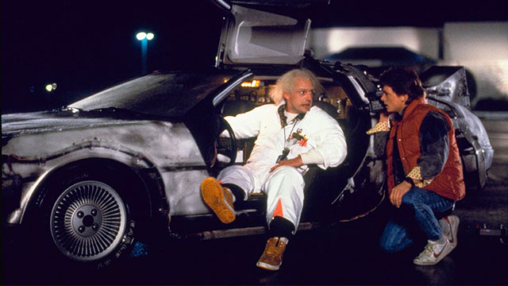

Back to the Future
Release:
Marty McFly, a typical American teenager of the Eighties, is accidentally sent back to 1955 in a plutonium-powered DeLorean "time machine" invented by a slightly mad scientist. During his often hysterical, always amazing trip back in time, Marty must make certain his teenage parents-to-be meet and fall in love - so he can get back to the future.